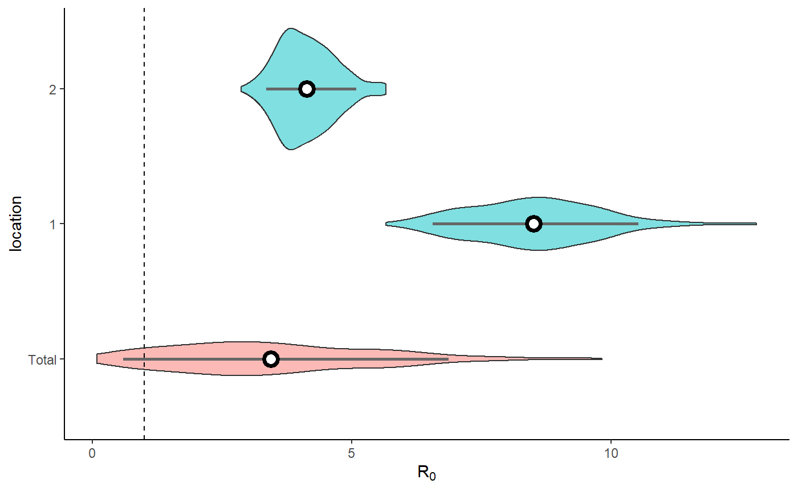
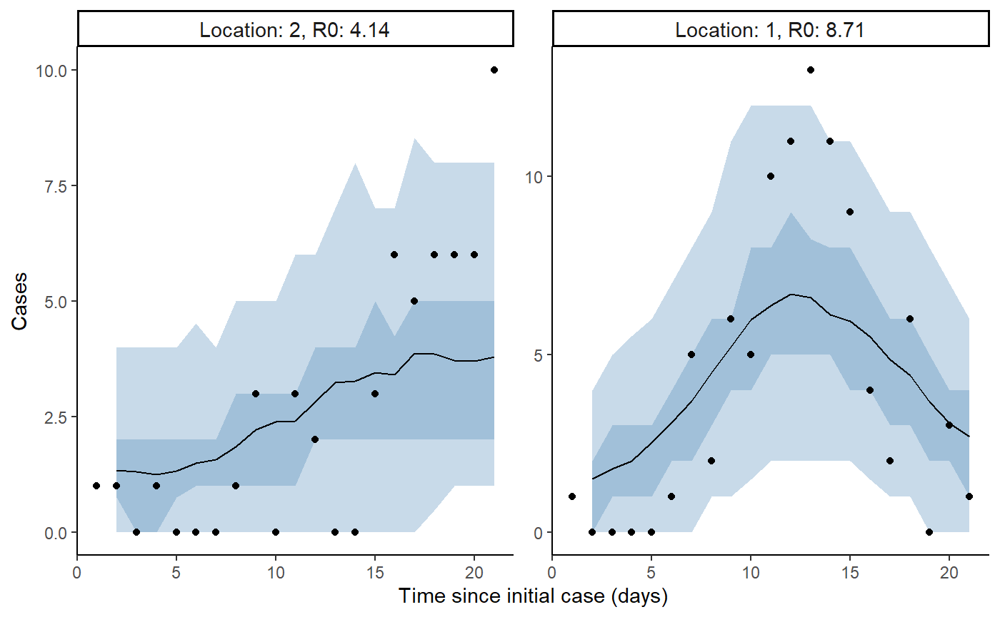
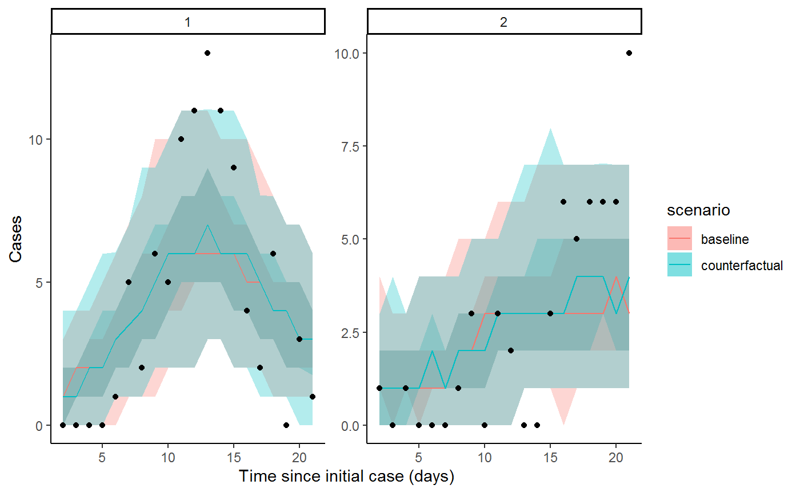

vignettes/introduction_to_fitting.Rmd
introduction_to_fitting.RmdThe package will expect the data in a certain format, such as the following,
# maximum time
tmax <- 21
# number of outbreaks
n_outbreaks <- 2
# number of daily cases per outbreak
outbreak_cases <- matrix(c(1,0,0,0,0,1,5,2,6,5,10,11,13,11,9,4,2,6,0,3,1,
1,1,0,1,0,0,0,1,3,0,3,2,0,0,3,6,5,6,6,6,10
),ncol=2)
# number of susceptible individuals by location
outbreak_sizes <- c(100,100)Parameterisation of the priors are kept in the list
prior_list and can be updated shown below,
# define list of priors
new_prior_list <- cr0eso::prior_list
# update mean of r0 prior to be 2
new_prior_list$r0_mean <- 2Fit model with no intervention and updated priors (for speed we only fit one chain but multiple should be sampled),
# load stan model
stan_mod <- rstan::stan_model(system.file("stan", "hierarchical_SEIR_incidence_model.stan", package = "cr0eso"))
fit <- seir_model_fit(
stan_model = stan_mod,
tmax,n_outbreaks,outbreak_cases,outbreak_sizes,
intervention_switch = FALSE,
priors = new_prior_list,
chains = 1)
#>
#> SAMPLING FOR MODEL 'hierarchical_SEIR_incidence_model' NOW (CHAIN 1).
#> Chain 1:
#> Chain 1: Gradient evaluation took 0.001 seconds
#> Chain 1: 1000 transitions using 10 leapfrog steps per transition would take 10 seconds.
#> Chain 1: Adjust your expectations accordingly!
#> Chain 1:
#> Chain 1:
#> Chain 1: Iteration: 1 / 600 [ 0%] (Warmup)
#> Chain 1: Iteration: 60 / 600 [ 10%] (Warmup)
#> Chain 1: Iteration: 120 / 600 [ 20%] (Warmup)
#> Chain 1: Iteration: 180 / 600 [ 30%] (Warmup)
#> Chain 1: Iteration: 240 / 600 [ 40%] (Warmup)
#> Chain 1: Iteration: 300 / 600 [ 50%] (Warmup)
#> Chain 1: Iteration: 301 / 600 [ 50%] (Sampling)
#> Chain 1: Iteration: 360 / 600 [ 60%] (Sampling)
#> Chain 1: Iteration: 420 / 600 [ 70%] (Sampling)
#> Chain 1: Iteration: 480 / 600 [ 80%] (Sampling)
#> Chain 1: Iteration: 540 / 600 [ 90%] (Sampling)
#> Chain 1: Iteration: 600 / 600 [100%] (Sampling)
#> Chain 1:
#> Chain 1: Elapsed Time: 6.602 seconds (Warm-up)
#> Chain 1: 3.623 seconds (Sampling)
#> Chain 1: 10.225 seconds (Total)
#> Chain 1:
#> Warning: The largest R-hat is NA, indicating chains have not mixed.
#> Running the chains for more iterations may help. See
#> http://mc-stan.org/misc/warnings.html#r-hat
#> Warning: Bulk Effective Samples Size (ESS) is too low, indicating posterior means and medians may be unreliable.
#> Running the chains for more iterations may help. See
#> http://mc-stan.org/misc/warnings.html#bulk-ess
#> Warning: Tail Effective Samples Size (ESS) is too low, indicating posterior variances and tail quantiles may be unreliable.
#> Running the chains for more iterations may help. See
#> http://mc-stan.org/misc/warnings.html#tail-ess
# Extract the posterior samples to a structured list:
posts <- rstan::extract(fit$model)
extracted_posts <- hom_extract_posterior_draws(posts) # get object of incidence and zeta
#> Warning: The `x` argument of `as_tibble.matrix()` must have unique column names if `.name_repair` is omitted as of tibble 2.0.0.
#> Using compatibility `.name_repair`.
#> Warning in rpois(dplyr::n(), incidence): NAs produced
result <- hom_plot_r0_by_location(extracted_posts=extracted_posts)
#> Warning: Ignoring unknown parameters: fun.y
# plot results
result$plot
#> No summary function supplied, defaulting to `mean_se()`
extracted_posts <- hom_extract_posterior_draws(posts) # get object of incidence and r0
#> Warning in rpois(dplyr::n(), incidence): NAs produced
result <- hom_plot_incidence_by_location(extracted_posts=extracted_posts,
outbreak_cases = outbreak_cases)
# plot results
result$plot
#> Warning: Removed 2 row(s) containing missing values (geom_path).
The code below extracts and plots the counterfactual scenario and also provides a summary table of cases by location in the baseline, scenario, where there was no intervention and the difference and proportional difference representing the cases averted. The final row provides a total summary of cases.
result <- hom_plot_counterfactual_by_location(fit,
outbreak_cases = outbreak_cases)
# plot results
show(result$plot)
# show table of results
result$table
#> # A tibble: 3 x 5
#> location baseline counterfactual averted proportion_aver~
#> <chr> <glue> <glue> <glue> <glue>
#> 1 1 87.5 (68 - 103.05) 85 (69 - 104) -1.5 (-24 - 21.05) -0.02 (-0.33 - ~
#> 2 2 51.5 (38 - 68) 52 (40.95 - 67) 0 (-17 - 17.05) 0 (-0.38 - 0.28)
#> 3 total 139 (114 - 163) 137 (117 - 162.05) -3 (-29.05 - 26.05) -0.02 (-0.23 - ~The code below takes the output of seir_model_fit and
creates a table of \(R_0\) and
intervention strength \(\zeta\)
summaries by location as well as a total representing the predictive
distribution. Also included is a critical time column, which is the
estimated time from the outbreak to where the effective R is below one.
The function also allows for adding more than one model to compare the
outputs, for example comparing a model with intervention to one with no
intervention assumed.
create_pub_tables(model1 = fit) %>%
knitr::kable()| location | r0 model1 | zeta model1 | critical_time model1 |
|---|---|---|---|
| 2 | 4.13 (3.3 - 5.02) | 0.55 (0.13 - 1.95) | 2.62 (0.69 - 10.79) |
| 1 | 8.56 (6.83 - 10.99) | 0.47 (0.11 - 1.82) | 4.43 (1.18 - 20.18) |
| Total | 5.65 (3.47 - 10.3) | 0.51 (0.11 - 1.94) | 3.23 (0.81 - 18.56) |